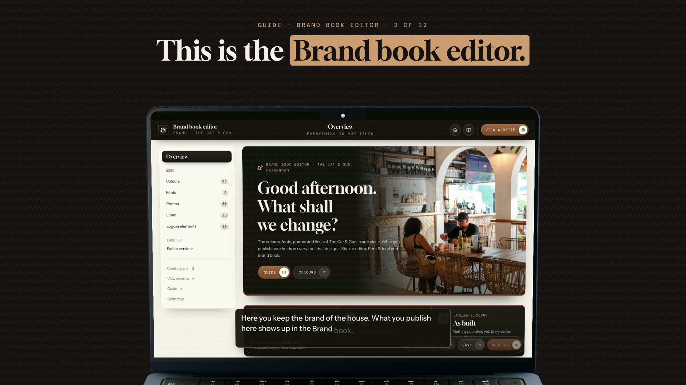
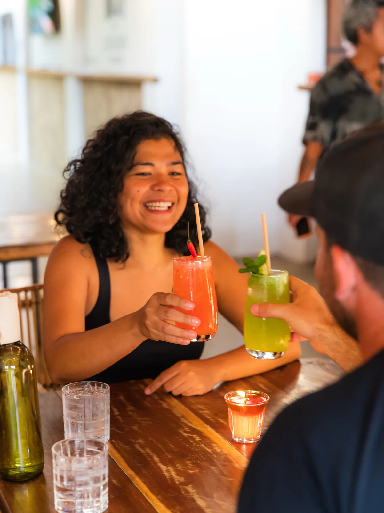

Academy · Room 04 · Guests · D
Inquiries & chat
Guests will ask the chat on the website, you give the answers. Here you see what they asked and what the chat knows.
Chapter 1 of 13 · This is Inquiries & chat.
In this video
What the video shows
Every chapter with the sentence from the video. A click on the time plays the video from there.
- 01This is Inquiries & chat.
- 02How a guest asks.
- 03No answer yet.
- 04What is new.
- 05What guests ask.
- 06Answer for every guest.
- 07The inbox.
- 08A personal reply.
- 09Your answers.
- 10What the chat knows.
- 11Add a line.
- 12Test a question.
- 13Publish and go back.
Up next
Next guide: Brand book editor
The guides follow the order of the rooms.

E1:09
Brand book editor
Colours, fonts, photos, lines and the logo with its elements. What you publish here shows up in the Brand book, the Sticker editor and Print & feed.
12 chaptersWatch the guide →

Room 04
Back to Guests
The room with this guide, the animation that shows how it works, the recommendation for use and the learnings.
GuestsEnter the room →